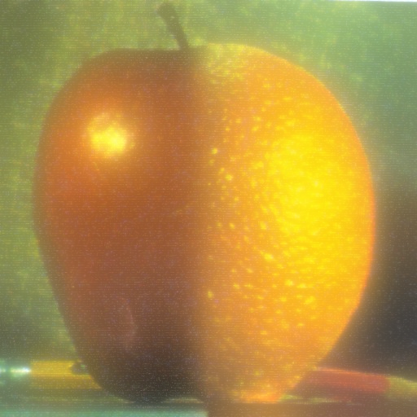
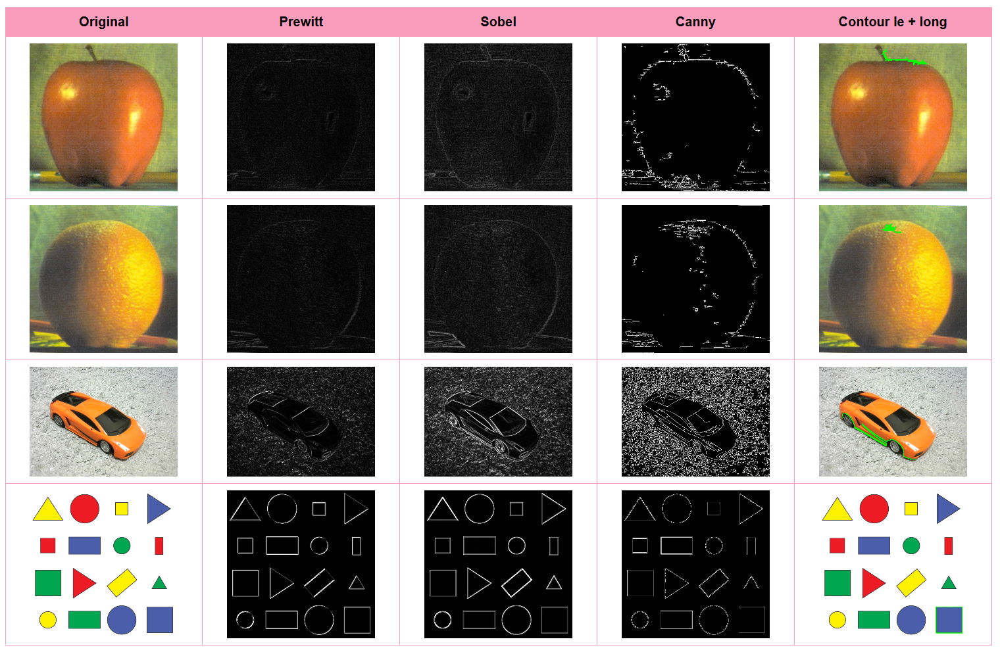
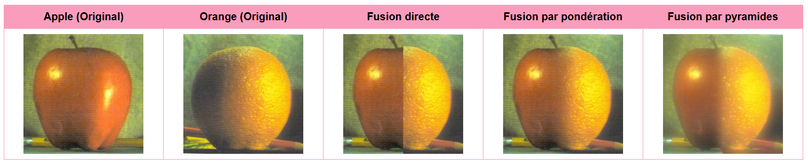
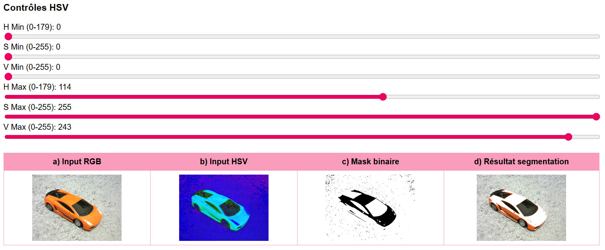
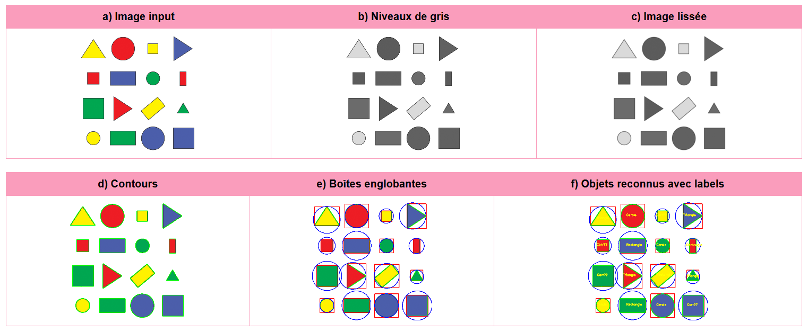

Traitement d'images avec OpenCV
Implémentation d'algorithmes de traitement d'images et de vision par ordinateur avec OpenCV JS

Aperçu du projet




Description du projet
Ce projet de travaux pratiques vise à explorer les fondamentaux du traitement d'images et de la vision par ordinateur en utilisant la bibliothèque OpenCV dans son implémentation JavaScript. À travers plusieurs exercices progressifs, j'ai pu manipuler et transformer des images pour en extraire des informations pertinentes.
L'approche méthodique du TP permet de découvrir les principales opérations de traitement d'images : des manipulations basiques comme le chargement et la conversion d'espaces colorimétriques, jusqu'aux techniques avancées de détection de contours, de segmentation par couleur et de reconnaissance de formes géométriques.
Technologies utilisées
Exercices réalisés
- OpenCV JS - Opérations de base : Chargement d'images, changement d'espaces couleurs (RGB, HSV, niveaux de gris), seuillage interactif avec sliders pour ajuster les paramètres en temps réel.
- Détection de contours : Implémentation et comparaison de plusieurs algorithmes de détection de contours (Prewitt, Sobel, Canny) avec identification du contour le plus long.
- Fusion d'images : Techniques de fusion de deux images (pomme et orange) : fusion directe, fusion par pondération et fusion avancée par pyramides de Laplace et Gaussiennes.
- Détection par la couleur : Segmentation d'image basée sur l'espace colorimétrique HSV avec contrôles interactifs (sliders H, S, V min/max) pour créer un masque binaire et isoler des zones de couleur spécifiques.
- Détection d'objets géométriques : Pipeline complet de détection : conversion en niveaux de gris, lissage de l'image, extraction de contours, calcul de boîtes englobantes, et reconnaissance d'objets avec labels (triangles, rectangles, cercles).
Défis techniques rencontrés
- Manipulation de matrices OpenCV : Comprendre la structure des objets cv.Mat et les opérations matricielles sur les images.
- Optimisation des paramètres : Ajustement des seuils et paramètres pour obtenir des résultats optimaux selon les images (détection de contours, seuillage HSV).
- Performance JavaScript : Gestion efficace des calculs intensifs de traitement d'images dans le navigateur.
- Interface interactive : Création de sliders et contrôles permettant l'ajustement en temps réel des paramètres de traitement.
- Pyramides d'images : Implémentation de la fusion par pyramides de Laplace et Gaussiennes, une technique avancée de composition d'images.
Compétences développées
Vision par ordinateur
Algorithmes de détection de contours, segmentation, reconnaissance de formes
Traitement d'images
Espaces colorimétriques, filtres, seuillage, pyramides d'images
OpenCV.js
Maîtrise de la bibliothèque OpenCV en JavaScript, manipulation de matrices cv.Mat
Développement interactif
Interfaces utilisateur avec contrôles en temps réel, Canvas HTML5
Résultats obtenus
Détection de contours : Comparaison visuelle des différents algorithmes (Prewitt, Sobel, Canny) montrant leurs forces respectives. L'algorithme de Canny s'est révélé le plus performant pour détecter des contours nets avec moins de bruit.
Fusion d'images : La technique de fusion par pyramides a produit des résultats nettement supérieurs à la fusion simple, avec des transitions naturelles entre les deux images (pomme et orange).
Segmentation par couleur : Le système de contrôle HSV interactif permet d'isoler précisément des objets par leur couleur, créant un masque binaire efficace pour la segmentation.
Reconnaissance de formes : Le pipeline de détection identifie avec succès les formes géométriques simples (triangles, rectangles, cercles) en analysant les contours et leurs propriétés (nombre de sommets, circularité).
Conclusion du Projet
Ce TP m'a permis de découvrir les bases du traitement d'images et de la vision par ordinateur, des domaines essentiels en informatique moderne. L'utilisation d'OpenCV.js offre une approche pratique et immédiate pour expérimenter avec ces concepts directement dans le navigateur.
Les compétences acquises sont directement applicables dans de nombreux domaines : reconnaissance d'objets, analyse médicale, robotique, réalité augmentée, contrôle qualité industriel, et bien d'autres applications nécessitant l'analyse automatique d'images.